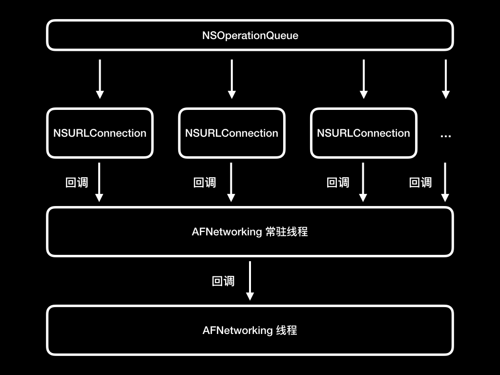

- 00 开篇词 锚定一个点，然后在这个点上深耕.md.html
- 01 建立你自己的iOS开发知识体系.md.html
- 02 App 启动速度怎么做优化与监控？.md.html
- 03 Auto Layout 是怎么进行自动布局的，性能如何？.md.html
- 04 项目大了人员多了，架构怎么设计更合理？.md.html
- 05 链接器：符号是怎么绑定到地址上的？.md.html
- 06 App 如何通过注入动态库的方式实现极速编译调试？.md.html
- 07 Clang、Infer 和 OCLint ，我们应该使用谁来做静态分析？.md.html
- 08 如何利用 Clang 为 App 提质？.md.html
- 09 无侵入的埋点方案如何实现？.md.html
- 10 包大小：如何从资源和代码层面实现全方位瘦身？.md.html
- 11 热点问题答疑（一）：基础模块问题答疑.md.html
- 12 iOS 崩溃千奇百怪，如何全面监控？.md.html
- 13 如何利用 RunLoop 原理去监控卡顿？.md.html
- 14 临近 OOM，如何获取详细内存分配信息，分析内存问题？.md.html
- 15 日志监控：怎样获取 App 中的全量日志？.md.html
- 16 性能监控：衡量 App 质量的那把尺.md.html
- 17 远超你想象的多线程的那些坑.md.html
- 18 怎么减少 App 电量消耗？.md.html
- 19 热点问题答疑（二）：基础模块问题答疑.md.html
- 20 iOS开发的最佳学习路径是什么？.md.html
- 21 除了 Cocoa，iOS还可以用哪些 GUI 框架开发？.md.html
- 22 细说 iOS 响应式框架变迁，哪些思想可以为我所用？.md.html
- 23 如何构造酷炫的物理效果和过场动画效果？.md.html
- 24 A_B 测试：验证决策效果的利器.md.html
- 25 怎样构建底层的发布和订阅事件总线？.md.html
- 26 如何提高 JSON 解析的性能？.md.html
- 27 如何用 Flexbox 思路开发？跟自动布局比，Flexbox 好在哪？.md.html
- 28 怎么应对各种富文本表现需求？.md.html
- 29 如何在 iOS 中进行面向测试驱动开发和面向行为驱动开发？.md.html
- 30 如何制定一套适合自己团队的 iOS 编码规范？.md.html
- 31 iOS 开发学习资料和书单推荐.md.html
- 32 热点问题答疑（三）.md.html
- 33 iOS 系统内核 XNU：App 如何加载？.md.html
- 34 iOS 黑魔法 Runtime Method Swizzling 背后的原理.md.html
- 35 libffi：动态调用和定义 C 函数.md.html
- 36 iOS 是怎么管理内存的？.md.html
- 37 如何编写 Clang 插件？.md.html
- 38 热点问题答疑（四）.md.html
- 39 打通前端与原生的桥梁：JavaScriptCore 能干哪些事情？.md.html
- 40 React Native、Flutter 等，这些跨端方案怎么选？.md.html
- 41 原生布局转到前端布局，开发思路有哪些转变？.md.html
- 42 iOS原生、大前端和Flutter分别是怎么渲染的？.md.html
- 43 剖析使 App 具有动态化和热更新能力的方案.md.html
- 用户故事 我是如何学习这个专栏的？.md.html
- 结束语 慢几步，深几度.md.html
- 捐赠
17 远超你想象的多线程的那些坑
你好，我是戴铭。今天，我们一起来聊聊iOS开发中，使用多线程技术会带来的那些问题。
我们可以先来试想这么一个场景，如果没有多线程技术，那么我们要对一张照片进行滤镜处理时，就只能由主线程来完成这个处理。可想而知，这时候主线程阻塞了，其他的任何操作都无法继续。
解决这个问题的方法，就是再多创建一个线程来进行滤镜处理的操作，这样主线程就可以继续执行其他操作。这，也就是我们今天要说的多线程技术了。
目前，在iOS开发中，我们经常会用到系统提供的方法来使用多线程技术开发App，期望可以充分利用硬件资源来提高 App 的运行效率。
但是，我们不禁会想到，像UIKit这样的前端框架并没有使用多线程技术。而 AFNetworking 2.0（网络框架）、FMDB（第三方数据库框架）这些用得最多的基础库，使用多线程技术时也非常谨慎。
那么，你有没有想过为什么 UIKit 不是线程安全的，UI 都要在主线程上操作。
在 AFNetworking 2.0 中，把每个请求都封装成了单独的NSOperationQueue，再由NSOperationQueue根据当前的CPU数量和系统负载来控制并发。那么，为什么 AFNetworking 2.0 没有为每个请求创建一个线程，而只是创建了一个线程，用来接收NSOperationQueue的回调呢？
FMDB只通过FMDatabaseQueue开启了一个线程队列，来串行地操作数据库。这，又是为什么呢？
让我说，这就是因为多线程技术有坑。特别是 UIKit 干脆就做成了线程不安全，只能在主线程上操作。
当你学了多线程的相关知识后，一定会忍不住去使用多线程，但在使用时一定要小心多线程的那些陷阱。只有这样，我们在使用多线程技术时才能够预见到可能会出现的问题，做到心中有数。
而写 UIKit、AFNetworking、FMDB 这些库的“大神”们，并不是解决不了多线程技术可能会带来的问题，而相反正是因为他们非常清楚这些可能存在的问题，所以为避免使用者滥用多线程，亦或是出于性能考虑，而选择了使用单一线程来保证这些基础库的稳定可用。
那这么说的话，为了稳定我就不能使用多线程技术了吗？
当然不是，多线程技术还是有很多适用场景的。就比如说，在需要快速进行多个任务计算的场景里，多线程技术确实能够明显提高单位时间内的计算效率。
还是以照片处理为例，当选择一张照片后，你希望能够看到不同滤镜处理后的效果。如果这些效果图都是在一个队列里串行处理的话，那么你就得等着这些滤镜一个一个地来处理。这么做的话，不仅会影响用户体验，也没能充分利用硬件资源，可以说是把高端手机当作低端机来用了。换句话说就是，用户花大价钱升级了手机硬件，操作App的体验却没有得到提升。
所以，我们不能因为多线程技术有坑就不去用，正确的方法应该是更多地去了解多线程会有哪些问题，如果我们能够事先预见到那些问题的话，那么避免这些问题的发生也就不在话下了。
接下来，我们就一起来看看多线程技术常见的两个大坑，常驻线程和并发问题，分别是从何而来，以及如何避免吧。
常驻线程
我们先说说多线程技术的第一个坑：常驻线程。
常驻线程，指的就是那些不会停止，一直存在于内存中的线程。我们在文章开始部分，说到的AFNetworking 2.0 专门创建了一个线程来接收 NSOperationQueue 的回调，这个线程其实就是一个常驻线程。接下来，我们就看看常驻线程这个问题是如何引起的，以及是否有对应的解决方案。
我们先通过 AFNetworking 2.0 创建常驻线程的代码，来看一下这个线程是怎么创建的。
+ (void)networkRequestThreadEntryPoint:(id)__unused object {
@autoreleasepool {
// 先用 NSThread 创建了一个线程
[[NSThread currentThread] setName:@"AFNetworking"];
// 使用 run 方法添加 runloop
NSRunLoop *runLoop = [NSRunLoop currentRunLoop];
[runLoop addPort:[NSMachPort port] forMode:NSDefaultRunLoopMode];
[runLoop run];
}
}
如代码所示，AFNetworking 2.0 先用 NSThread 创建了一个线程，并使用 NSRunLoop 的 run 方法给这个新线程添加了一个 runloop。
这里我需要先和你说明白一个问题，通过NSRunLoop添加runloop的方法有三个：
- run方法。通过 run 方法添加的 runloop ，会不断地重复调用runMode:beforeDate: 方法，来保证自己不会停止。
- runUntilDate: 和 runMode:beforeDate 方法。这两个方法添加的runloop，可以通过指定时间来停止 runloop。
看到这里，你一定在想，原来创建一个常驻线程这么容易，那么我每写一个库就创建一个常驻线程来专门处理当前库自己的事情，该多好啊。你看，大名鼎鼎的 AFNetworking 2.0 库就是这么干的。
但是，你再想想，如果你有30个库，每个库都常驻一个线程。那这样做，不但不能提高CPU的利用率，反而会降低程序的执行效率。也就是说，这样做的话，就不是充分利用而是浪费CPU 资源了。如果你的库非常多的话，按照这个思路创建的常驻线程也会更多，结果就只会带来更多的坑。
说到这里，既然常线程是个坑，那为什么 AFNetworking 2.0 库还要这么做呢？
其实，这个问题的根源在于 AFNetworking 2.0 使用的是 NSURLConnection，而NSURLConnection的设计上存在些缺陷。接下来，我和你说说它的设计上有哪些缺陷，了解了这些缺陷后你也就能够理解当时 AFNetworking 2.0 为什么明知常驻线程有坑，还是使用了常驻线程。这样，你以后再碰到类似的情况时，也可以跟 AFNetworking 2.0 一样使用常线程去解决问题，只要不滥用常驻线程就可以了。
NSURLConnection 发起请求后，所在的线程需要一直存活，以等待接收 NSURLConnectionDelegate回调方法。但是，网络返回的时间不确定，所以这个线程就需要一直常驻在内存中。既然这样，AFNetworking 2.0为什么没有在主线程上完成这个工作，而一定要新创建一个线程来做呢？
这是因为主线程还要处理大量的UI 和交互工作，为了减少对主线程的影响，所以AFNetworking 2.0 就新建了一个常驻线程，用来处理所有的请求和回调。AFNetworking 2.0的线程设计如下图所示：

图1 AFNetworking 2.0的线程设计示意图
通过上面的分析我们可以知道，如果不是因为NSURLConnection 的请求必须要有一个一直存活的线程来接收回调，那么AFNetworking 2.0 就不用创建一个常驻线程出来了。虽然说，在一个 App 里网络请求这个动作的占比很高，但也有很多不需要网络的场景，所以线程一直常驻在内存中，也是不合理的。
但是，AFNetworking 在3.0版本时，使用苹果公司新推出的 NSURLSession 替换了 NSURLConnection，从而避免了常驻线程这个坑。NSURLSession 可以指定回调 NSOperationQueue，这样请求就不需要让线程一直常驻在内存里去等待回调了。实现代码如下：
self.operationQueue = [[NSOperationQueue alloc] init];
self.operationQueue.maxConcurrentOperationCount = 1;
self.session = [NSURLSession sessionWithConfiguration:self.sessionConfiguration delegate:self delegateQueue:self.operationQueue];
从上面的代码可以看出，NSURLSession发起的请求，可以指定回调的delegateQueue，不再需要在当前线程进行代理方法的回调。所以说，NSURLSession 解决了 NSURLConnection 的线程回调问题。
可见，AFNetworking 2.0 使用常驻线程也是无奈之举，一旦有方案能够替代常驻线程，它就会毫不犹豫地废弃常驻线程。那么，你还有什么理由要使用常驻线程呢？
如果你需要确实需要保活线程一段时间的话，可以选择使用 NSRunLoop 的另外两个方法 runUntilDate: 和 runMode:beforeDate，来指定线程的保活时长。让线程存活时间可预期，总比让线程常驻，至少在硬件资源利用率这点上要更加合理。
或者，你还可以使用 CFRunLoopRef 的 CFRunLoopRun 和 CFRunLoopStop 方法来完成 runloop 的开启和停止，达到将线程保活一段时间的目的。
并发
并发是多线程技术的第二个大坑。
在iOS 并发编程技术中，GCD的使用率是最高的。所以，在这篇文章中，我就以GCD为例和你说说多线程的并发问题。
GCD（Grand Central Dispatch）是由苹果公司开发的一个多核编程解决方案。它提供的一套简单易用的接口，极大地方便了并发编程。同时，它还可以完成对复杂的线程创建、释放时机的管理。但是，GCD带来这些便利的同时，也带来了资源使用上的风险。
例如，在进行数据读写操作时，总是需要一段时间来等待磁盘响应的，如果在这个时候通过 GCD 发起了一个任务，那么GCD就会本着最大化利用 CPU的原则，会在等待磁盘响应的这个空档，再创建一个新线程来保证能够充分利用 CPU。
而如果GCD发起的这些新任务，都是类似于数据存储这样需要等待磁盘响应的任务的话，那么随着任务数量的增加，GCD 创建的新线程就会越来越多，从而导致内存资源越来越紧张，等到磁盘开始响应后，再读取数据又会占用更多的内存。结果就是，失控的内存占用会引起更多的内存问题。
这种情况最典型的场景就是数据库读写操作。FMDB是一个开源的第三方数据库框架，通过FMDatabaseQueue 这个核心类，将与读写数据库相关的磁盘操作都放到一个串行队列里执行，从而避免了线程创建过多导致系统资源紧张的情况。
FMDatabaseQueue 使用起来也很简单，我的开源项目“已阅”就是使用FMDB 进行数据存储的。但，我使用的是 FMDatabase 而不是 FMDatabaseQueue。为什么要这么做呢？因为这个项目里的并发量并不大，是可控的，所以即使不使用 FMDatabaseQueue 也可以快速完成数据的存储工作。
但，为了能够支持以后可能更大的并发量，下面我将其中“已读”功能的数据库操作改成 FMDatabaseQueue。这样，我就可以将并行队列转化为串行队列来执行，避免大并发读写磁盘操作造成内存问题，改写代码如下：
// 标记文章已读
- (RACSignal *)markFeedItemAsRead:(NSUInteger)iid fid:(NSUInteger)fid{
@weakify(self);
return [RACSignal createSignal:^RACDisposable *(id<RACSubscriber> subscriber) {
@strongify(self);
// 改写成 FMDatabaseQueue 串行队列进行数据库操作
FMDatabaseQueue *queue = [FMDatabaseQueue databaseQueueWithPath:self.feedDBPath];
[queue inDatabase:^(FMDatabase *db) {
FMResultSet *rs = [FMResultSet new];
// 读取文章数据
if (fid == 0) {
rs = [db executeQuery:@"select * from feeditem where isread = ? and iid >= ? order by iid desc", @(0), @(iid)];
} else {
rs = [db executeQuery:@"select * from feeditem where isread = ? and iid >= ? and fid = ? order by iid desc", @(0), @(iid), @(fid)];
}
NSUInteger count = 0;
while ([rs next]) {
count++;
}
// 更新文章状态为已读
if (fid == 0) {
[db executeUpdate:@"update feeditem set isread = ? where iid >= ?", @(1), @(iid)];
} else {
[db executeUpdate:@"update feeditem set isread = ? where iid >= ? and fid = ?", @(1), @(iid), @(fid)];
}
[subscriber sendNext:@(count)];
[subscriber sendCompleted];
[db close];
}];
return nil;
}];
}
如代码所示，你只需要将数据库的操作放到 FMDatabaseQueue 的 inDatabase 方法入参 block 中，就可以在 FMDatabaseQueue 维护的串行队列里排队等待执行了。原 FMDatabase 的写法，你可以直接到我的“已阅”项目里查看。
总结来讲，类似数据库这种需要频繁读写磁盘操作的任务，尽量使用串行队列来管理，避免因为多线程并发而出现内存问题。
内存问题
在并发这部分，我一直在和你说线程开多了会有内存问题，那到底是什么内存问题呢？为什么会有内存问题呢？
我们知道，创建线程的过程，需要用到物理内存，CPU 也会消耗时间。而且，新建一个线程，系统还需要为这个进程空间分配一定的内存作为线程堆栈。堆栈大小是 4KB 的倍数。在iOS 开发中，主线程堆栈大小是 1MB，新创建的子线程堆栈大小是 512KB。
除了内存开销外，线程创建得多了，CPU 在切换线程上下文时，还会更新寄存器，更新寄存器的时候需要寻址，而寻址的过程还会有较大的 CPU 消耗。
所以，线程过多时内存和 CPU 都会有大量的消耗，从而导致App 整体性能降低，使得用户体验变成差。CPU 和内存的使用超出系统限制时，甚至会造成系统强杀。这种情况对用户和App的伤害就更大了。
小结
在今天的这篇文章中，我与你分享了多线程技术会带来的一些问题。
一提到多线程技术，我们往往都会联想到死锁等锁的问题，但其实锁的问题是最容易查出来的，反而是那些藏在背后，会慢慢吃尽你系统资源的问题，才是你在使用多线程技术时需要时刻注意的。
其实，线程是个非常大的这个话题，涉及的知识也非常多，而我今天只是选取了常驻线程和并发和你详细展开。因为，这两个技术非常容易使用不当，造成不堪设想的后果。所以，我给你的建议是：常驻线程一定不要滥用，最好不用。对于多线程并发也是一样，除非是并发数量少且可控，或者必须要在短时间内快速处理数据的情况，否则我们在一般情况下为避免数量不可控的并发处理，都需要把并行队列改成串行队列来处理。
课后小作业
今天的课后小作业，我准备了两个，你可以选择其中一个，当然也可以全部完成。
第一个小作业是一道动手题：请你先fork 我的“已阅”项目，将里面的 FMDatabase 替换成 FMDatabaseQueue；然后，再使用性能工具查看前后的内存消耗情况。
第二个小作业相对轻松些，请你在留言中说说曾经遇到过的多线程问题，你又是怎么解决的。
感谢你的收听，欢迎你在评论区给我留言分享你的观点，也欢迎把它分享给更多的朋友一起阅读。
© 2019 - 2023 Liangliang Lee. Powered by gin and hexo-theme-book.